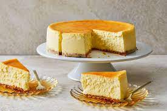

Description:
Rich and creamy cheesecake, using sour cream for an extra layer of texture
Ingredients:
For the base:
- 18 graham crackers, crushed
- 3 tablespoons melted butter
For the filling:
- 1 cup sour cream
- ¼ cup all-purpose flour
- 1 tablespoon vanilla extract
- 4 (8 ounce) packages cream cheese
- 1 ½ cups white sugar
- ⅔ cup milk
Method:
- Preheat the oven to 350 degrees F (175 degrees C). Lightly grease the bottom and sides of a 9-inch springform pan.
For the base:
- Mix graham cracker crumbs and melted butter together in a bowl until evenly moistened. Press crumb mixture into the bottom and about 1/2 inch up the sides of the springform pan.
For the filling:
- Whisk sour cream, flour, and vanilla extract together in a bowl; set aside.
- Stir cream cheese and sugar together with a wooden spoon in a separate bowl until evenly incorporated, 3 to 5 minutes; add milk and whisk until just combined. Whisk in eggs, one at a time, stirring well after each addition. Stir in lemon zest, orange zest, and sour cream mixture; whisk until just incorporated. Pour mixture into prepared springform pan.
- Bake in the preheated oven until the edges have nicely puffed and the surface of the cheesecake is firm except for a small spot in the center that will jiggle when the pan is gently shaken, about 1 hour.
- When the cheesecake is done, turn off the oven and let it cool in the oven for 3 to 4 hours. This prevents any cracks from forming on the top of the cheesecake.
- Once cooled, decorate as desired.